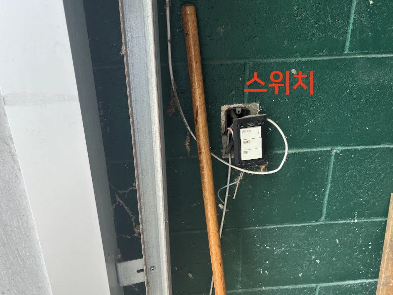

🏗️ 부암동 건축 점검 보고서
실제 현장 사진 포함 버전
점검일자: 2025년 5월
보고서 생성일: 2025년 5월 30일
총 점검 항목: 13개 (11번 삭제됨)
⭐⭐⭐⭐���⭐⭐⭐ 중요도 8
⭐⭐⭐⭐⭐ 중요도 5
⭐⭐⭐ 중요도 3
⭐ 중요도 1
🚨 긴급 알림: 건물외벽 곰팡이 심각 + 2층 누수 + 바닥 파손 - 즉시 조치 필요!
⭐⭐⭐⭐⭐⭐⭐⭐ 중요도 8 - 매우 중요 (100% 완료 필수)
건물외벽 곰팡이 청소 - 심각 🚨
⭐⭐⭐⭐⭐⭐⭐⭐
🚨 곰팡이 심각 상태
(현장 사진 촬영 필요)
(현장 사진 촬영 필요)
🚨 매우 긴급 - 임대인과 협의 필수: 건물 외벽에 곰팡이가 심하게 발생하여 건강 및 구조적 위험이 있습니다.
협의사항: 곰팡이 전문 평가, 전문 업체 곰팡이 제거, 방수·환기 개선, 예방 유지보수 계획
권장 처리: 락스 희석액/전용 제거제, 실리콘 기반 방수제, 환기 시스템 점검
협의사항: 곰팡이 전문 평가, 전문 업체 곰팡이 제거, 방수·환기 개선, 예방 유지보수 계획
권장 처리: 락스 희석액/전용 제거제, 실리콘 기반 방수제, 환기 시스템 점검
14번 - 높은 우선순위 보수
⭐⭐⭐⭐⭐⭐⭐⭐

🚨 매우 중요 - 임대인과 협의 필수: 높은 우선순위로 처리가 필요한 보수 작업입니다.
협의사항: 구체적인 보수 범위 및 방법 논의, 작업 일정 및 예산 협의, 전문 업체 선정 및 견적 비교
협의사항: 구체적인 보수 범위 및 방법 논의, 작업 일정 및 예산 협의, 전문 업체 선정 및 견적 비교
⭐ 중요도 1 - 최우선 기본 작업 (100% 완료 필수)
1번 - 전기 스위치
⭐

✅ 최우선 기본 작업: 전기 스위치 상태 점검 완료. 정상 작동 확인되며 안전 기준에 부합합니다.
임대인과 협의: 기본 전기 시설 유지보수 계획 수립
임대인과 협의: 기본 전기 시설 유지보수 계획 수립
2번 - 통신함 커버
⭐

✅ 최우선 기본 작업: 통신함 커버 설치 상태 양호. 접근성 및 보안성이 확보되어 있습니다.
임대인과 협의: 통신 시설 정기 점검 및 유지보수
임대인과 협의: 통신 시설 정기 점검 및 유지보수
3번 - 바닥1 심각한 파손 🚨
⭐

🚨 최우선 긴급 작업: 맨홀 커버 주변 바닥이 완전히 붕괴되어 안전사고 위험이 매우 높습니다.
임대인과 긴급 협의: 즉시 출입 통제, 응급 보수, 균열 주입제 및 바닥 보수 모르타르 시공
권장 자재: Sika Sikadur-52, ARDEX K 15
임대인과 긴급 협의: 즉시 출입 통제, 응급 보수, 균열 주입제 및 바닥 보수 모르타르 시공
권장 자재: Sika Sikadur-52, ARDEX K 15
4번 - 바닥2 균열
⭐

⚠️ 최우선 기본 작업: 맨홀 커버 주변에서 균열이 확인되었습니다.
임대인과 협의: 정기적인 안전점검 및 보수, 균열 진행 상황 모니터링
임대인과 협의: 정기적인 안전점검 및 보수, 균열 진행 상황 모니터링
5번 - 기본 시설
⭐

🔧 최우선 기본 작업: 기본적인 건물 시설의 보수가 필요합니다.
임대인과 협의: 각 항목별 보수 범위 확인, 우선순위 작업 순서 결정, 통합 보수 계획 수립
임대인과 협의: 각 항목별 보수 범위 확인, 우선순위 작업 순서 결정, 통합 보수 계획 수립
6번 - 2층 화장실 천정 누수 🚨
⭐

🚨 최우선 긴급 작업: 2층 화장실 천정의 누수 문제를 해결해야 합니다.
임대인과 긴급 협의: 누수 원인 정밀 진단, 방수 작업 범위 및 방법, 천정 구조적 손상 확인, 배관 시스템 점검
권장 처리: 누수 지점 특정 및 차단, 방수 처리 및 천정 보수, 환기 시설 개선
임대인과 긴급 협의: 누수 원인 정밀 진단, 방수 작업 범위 및 방법, 천정 구조적 손상 확인, 배관 시스템 점검
권장 처리: 누수 지점 특정 및 차단, 방수 처리 및 천정 보수, 환기 시설 개선
7번 - 2층 화장실 관련
⭐

🔧 최우선 기본 작업: 2층 화장실 관련 시설 점검 및 보수가 필요합니다.
임대인과 협의: 화장실 시설 전반적인 점검, 배관 및 환기 시설 확인
임대인과 협의: 화장실 시설 전반적인 점검, 배관 및 환기 시설 확인
⭐⭐⭐⭐⭐ 중요도 5 - 중요 (90% 완료 목표)
8번 - 카페 바테이블 처리
⭐⭐⭐⭐⭐

👤 전 임차인과 협의사항: 전 임차인이 설치한 카페 바테이블 처리 방안입니다.
협의 내용: 전임차인이 카페 바테이블을 두고 갈 경우 우리가 철거 작업을 진행
처리 방안: 바테이블 상태 확인 및 사진 촬영, 철거 방법 및 폐기물 처리 계획, 철거 후 바닥·벽면 보수 여부 확인
협의 내용: 전임차인이 카페 바테이블을 두고 갈 경우 우리가 철거 작업을 진행
처리 방안: 바테이블 상태 확인 및 사진 촬영, 철거 방법 및 폐기물 처리 계획, 철거 후 바닥·벽면 보수 여부 확인
⭐⭐⭐ 중요도 3 - 보통 (80% 완료 목표)
조경 정리 - 환경 개선
⭐⭐⭐
🌿 조경 정리 필요
(현장 사진 촬영 필요)
(현장 사진 촬영 필요)
🌿 환경 개선 작업: 건물 주변 조경 정리 및 환경 개선이 필요합니다.
임대인과 협의: 조경 정리 범위 및 방법, 잡초 제거 및 배수로 청소, 식재 정리 및 정비
작업 내용: 건물 주변 잡초 제거, 배수로 및 배수 시설 청소, 기존 식재 정리 및 정비
임대인과 협의: 조경 정리 범위 및 방법, 잡초 제거 및 배수로 청소, 식재 정리 및 정비
작업 내용: 건물 주변 잡초 제거, 배수로 및 배수 시설 청소, 기존 식재 정리 및 정비
9번 - 2층 창고 관련
⭐⭐⭐

🔧 보통 우선순위: 2층 창고 관련시설의 점검 및 보수가 필요합니다.
임대인과 협의: 창고 시설 전반적인 점검, 구체적인 보수 내용 확인, 작업 일정 및 예산 협의
임대인과 협의: 창고 시설 전반적인 점검, 구체적인 보수 내용 확인, 작업 일정 및 예산 협의
10번 - 2층 창고 천정
⭐⭐⭐

🔧 보통 우선순위: 2층 창고 천정 상태 점검 및 필요시 보수 작업이 필요합니다.
임대인과 협의: 천정 구조적 상태 확인, 구체적인 보수 내용 확인, 작업 일정 및 예산 협의
임대인과 협의: 천정 구조적 상태 확인, 구체적인 보수 내용 확인, 작업 일정 및 예산 협의
13번 - 폴딩도어
⭐⭐⭐

🔧 보통 우선순위: 폴딩도어 상태 점검 및 조정이 필요합니다.
임대인과 협의: 폴딩도어 작동 상태 확인, 밀폐성 개선 작업, 정기 유지보수 계획
임대인과 협의: 폴딩도어 작동 상태 확인, 밀폐성 개선 작업, 정기 유지보수 계획
📊 부암동 건축 점검 결과 요약
점검일자: 2025년 5월 | 총 점검 항목: 13개
2
⭐⭐⭐⭐⭐⭐⭐⭐ 중요도 8
매우 중요
매우 중요
1
⭐⭐⭐⭐⭐ 중요도 5
중요
중요
4
⭐⭐⭐ 중요도 3
보통
보통
7
⭐ 중요도 1
최우선 기본
최우선 기본
🚨 긴급 처리 필요 항목
• 건물외벽 곰팡이 청소 - 건강 및 구조적 위험 (중요도 8)
• 3번 바닥1 심각한 파손 - 안전사고 위험 (중요도 1)
• 6번 2층 화장실 천정 누수 - 구조적 손상 가능성 (중요도 1)
• 3번 바닥1 심각한 파손 - 안전사고 위험 (중요도 1)
• 6번 2층 화장실 천정 누수 - 구조적 손상 가능성 (중요도 1)
📅 6주 작업 일정
1주차: 긴급 항목 협의 (외벽 곰팡이, 누수, 바닥)
2주차: 최우선 작업 착수 (중요도 1 항목들)
3주차: 매우 중요 작업 (외벽 청소, 14번)
4주차: 전임차인 협의 (카페 바테이블 처리)
5-6주차: 조경 정리 및 기타 보수 작업
2주차: 최우선 작업 착수 (중요도 1 항목들)
3주차: 매우 중요 작업 (외벽 청소, 14번)
4주차: 전임차인 협의 (카페 바테이블 처리)
5-6주차: 조경 정리 및 기타 보수 작업
보고서 버전: v2.0 (사진 포함) | 업데이트: 2025년 5월 30일
협의 주체: 임대인 12개, 전임차인 1개 | 삭제된 항목: 11번
협의 주체: 임대인 12개, 전임차인 1개 | 삭제된 항목: 11번